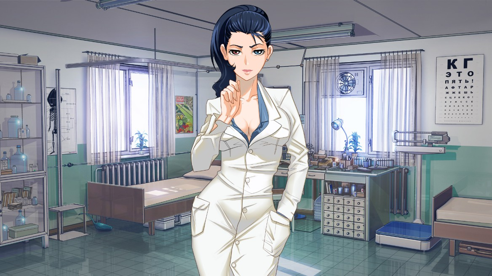

Виола
Виола — второстепенная героиня новеллы «Бесконечное Лето». Одна из двух работников лагеря,
фигурирующих в игре. Вторая — Ольга Дмитриевна.
Виола — медсестра в пионерлагере «Совёнок». За пределы медпункта практически не выходит. При первой встрече
Семён описывает её как женщину средних лет. Она высокого роста. У неё длинные тёмные волосы. Обладает гетерохромией.
Разрушая все стереотипы о сотрудниках пионерлагерей, Виола часто разговаривает двусмысленными фразами, чем вгоняет героя
в краску. Обращение «пионер» только добавляет накала.